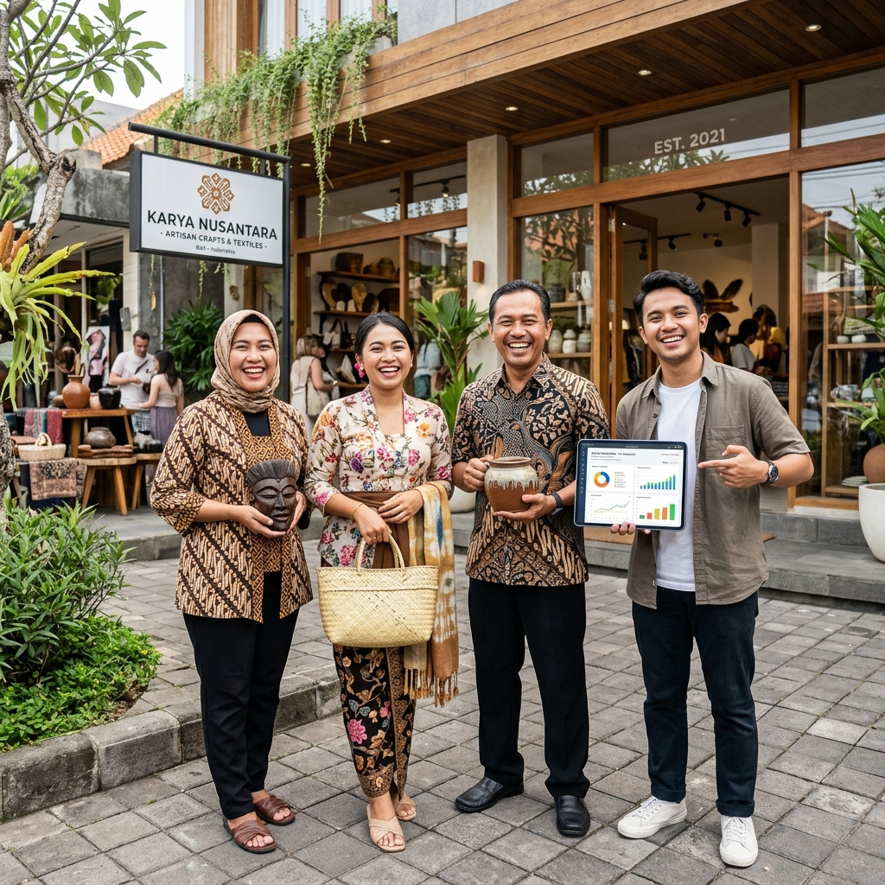
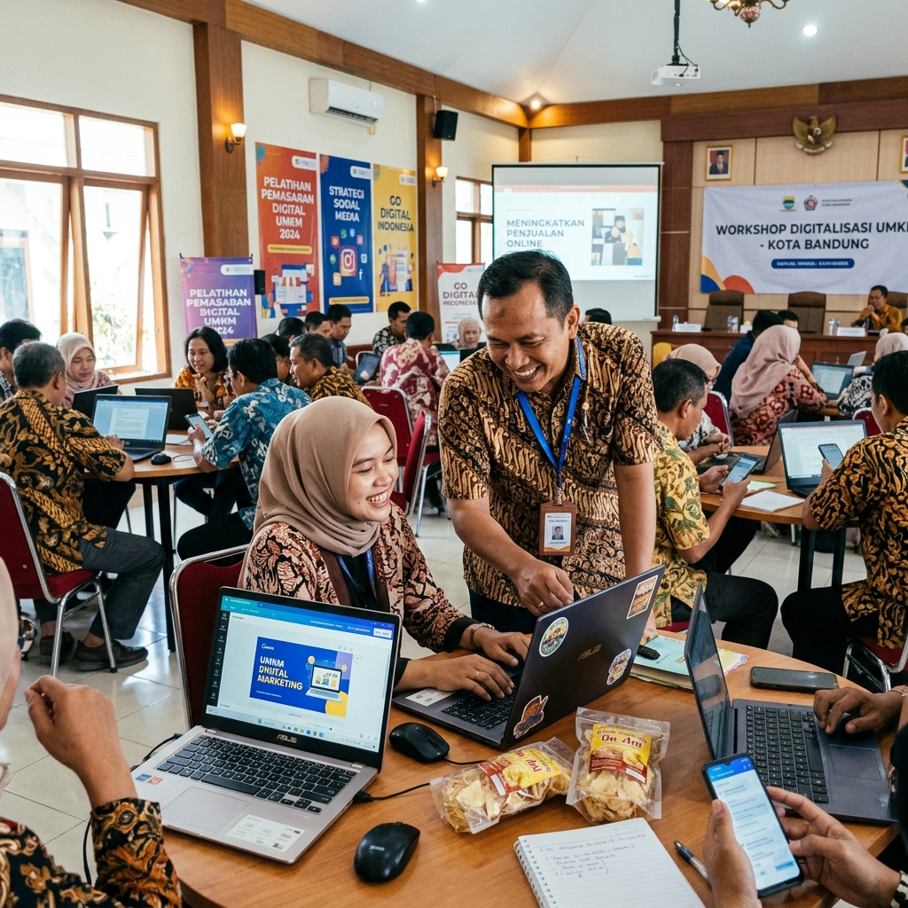
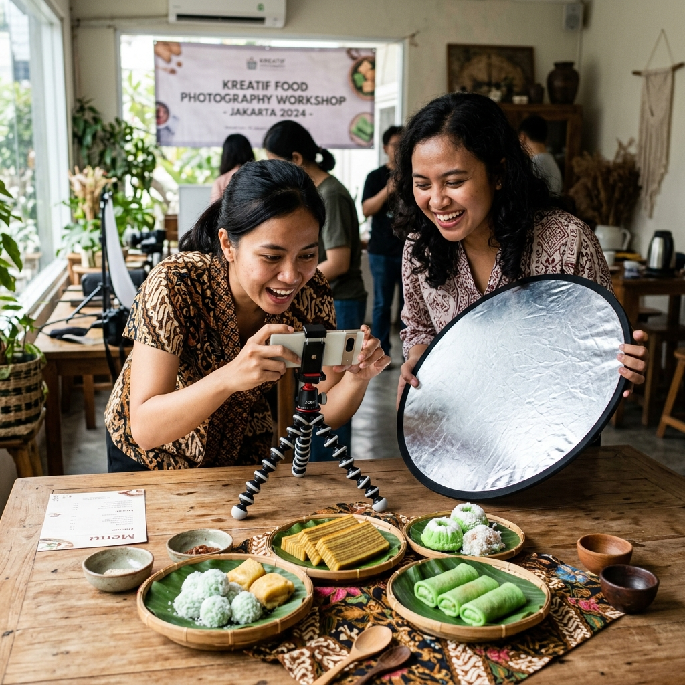
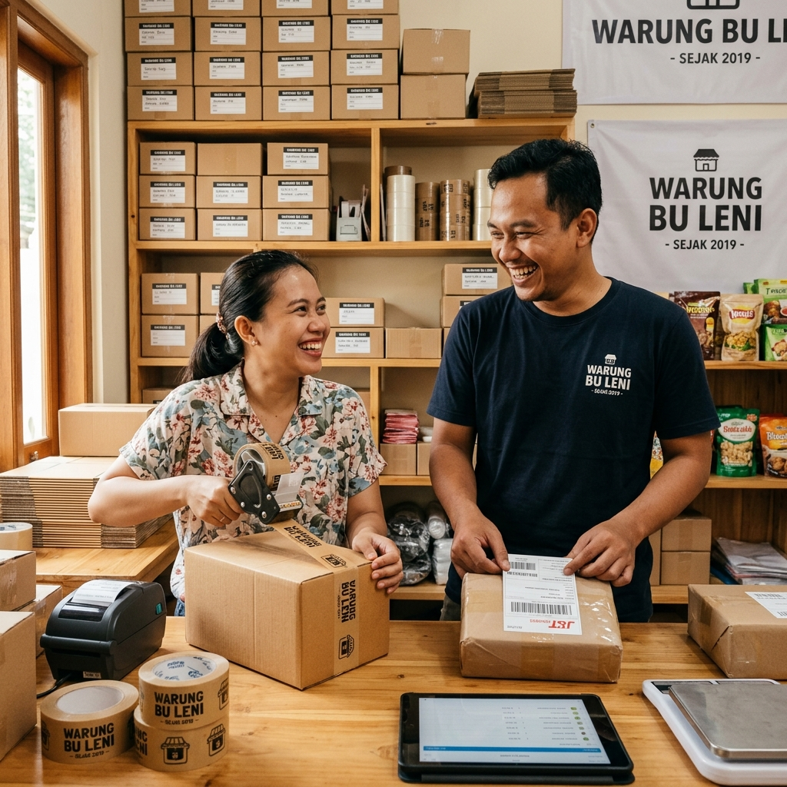

Saatnya Usaha Lokal Tumbuh Secara Digital.
Mitra UMKM adalah portal pendampingan digital yang membantu pelaku usaha mikro, kecil, dan menengah meningkatkan pemahaman serta kemampuan digital melalui informasi, edukasi, dan program pendampingan.

Mulai Digitalisasi dari Sini
Temukan modul pendampingan digital yang paling sesuai dengan kebutuhan usaha Anda saat ini.
Pelatihan Digital
Pembekalan dasar ekosistem bisnis online, pengelolaan media sosial, dan teknik pemanfaatan perangkat digital usaha.
Branding & Konten Produk
Panduan praktis mengambil foto produk yang rapi, identitas visual brand, dan teknik penyusunan deskripsi jualan.
Pemasaran & Penjualan Online
Optimasi toko di marketplace Tokopedia & Shopee serta teknik komunikasi promosi via WhatsApp Business.
Website & Digitalisasi Bisnis
Pembuatan halaman web katalog produk interaktif yang terhubung langsung ke kontak pemesanan toko.
Pengembangan Usaha
Pencatatan keuangan digital sederhana dan penerapan pembayaran QRIS untuk mempermudah transaksi usaha.
Galeri Pendampingan UMKM
Potret kegiatan sesi pendampingan dan aktivitas pelaku usaha lokal yang bergabung bersama Mitra UMKM.

Suasana bimbingan strategi konten dan media sosial bersama para pemilik usaha.

Praktik pengambilan foto produk makanan dan kriya menggunakan kamera smartphone.

Bimbingan pembuatan katalog produk dan WhatsApp Business untuk pemasaran online.
Program Pendampingan Popular
Modul pendampingan terstruktur yang dirancang praktis dan ramah bagi pelaku usaha pemula.

Dasar Marketing Digital & Optimasi Social Media
Panduan langkah demi langkah merancang strategi konten Instagram & TikTok untuk menarik pelanggan potensial.
Lihat Detail Program
Fotografi Produk & Packaging Estetis via HP
Pelajari teknik mengambil foto produk yang rapi hanya menggunakan smartphone dan pencahayaan alami rumahan.
Lihat Detail Program
Pembuatan Web Catalog & Toko WhatsApp
Miliki halaman web katalog produk praktis yang terhubung langsung ke WhatsApp tanpa biaya server mahal.
Lihat Detail ProgramEmpat Langkah Mudah Mengikuti Pendampingan
Proses sederhana untuk memulai perjalanan pengembangan digital usaha Anda.
Pilih Program
Jelajahi katalog program sesuai prioritas pengembangan bisnis Anda saat ini.
Isi Formulir
Lengkapi data usaha sederhana tanpa biaya atau persyaratan rumit.
Konfirmasi WA
Tim pendamping akan menghubungi Anda via WhatsApp untuk jadwal sesi.
Mulai Belajar
Ikuti sesi pendampingan dan terapkan hasilnya langsung pada usaha Anda.
Artikel Blog & Panduan Digital Terbaru
Bacaan informatif yang menyajikan tips praktis seputar pemasaran dan pengelolaan usaha lokal.

5 Cara Membuat Deskripsi Produk yang Memikat Pembeli
Pelajari teknik menulis deskripsi produk yang berfokus pada manfaat utama bagi pelanggan.

Tips Pencahayaan Alami untuk Foto Produk Rumahan
Gunakan pencahayaan jendela dan alat sederhana untuk menghasilkan foto produk yang bersih.

Fitur WhatsApp Business yang Membantu Pengelolaan Toko
Mulai dari label pelanggan hingga katalog produk otomatis untuk mempermudah transaksi.
Pertanyaan Ringkas
Jawaban cepat untuk pertanyaan seputar program dan alur pendampingan Mitra UMKM.
Bawa Usaha Lokal Anda Go Digital Hari Ini.
Dapatkan pendampingan praktis, modul ringkas, dan pengalaman belajar yang ramah bagi pengembangan usaha Anda.
Daftar Program Sekarang